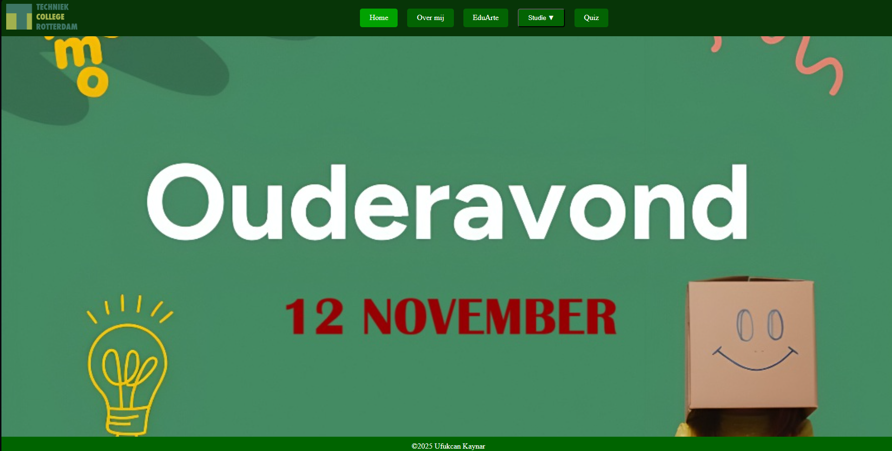

Over mij

Ufukcan Kaynar
Opleiding: Software Developer bij Techniek College Rotterdam. (2025 - Nu)
Werkervaringen: 5 Maanden gewerkt op hoogvliet als vakkenvuller.

Projecten: Bankapp, Webshop voor games en Eigen websites


Contactgegevens:
Telefoon: 06 28264961
E-mail: 9030526@student.tcrmbo.nl
Klas: SOD1B
Links: Github
LinkedIn